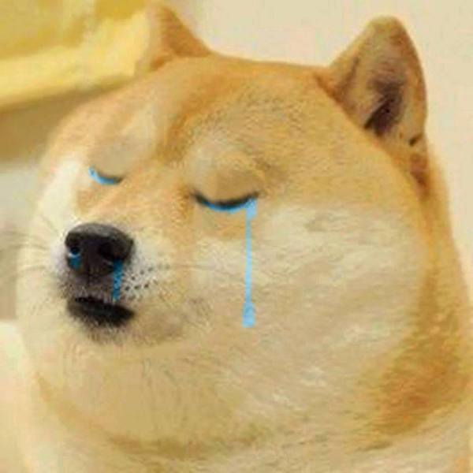
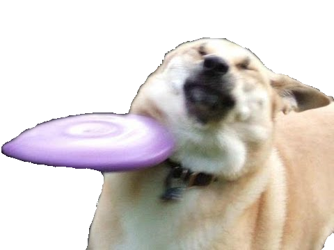

The Adventure of Agent Doge is a story of a heroic dog named Doge. Doge was having a nice day off from work when he was taking a walk in a park with his assistant Hoomane. Suddenly they heard a painful bark nearby. When they followed the sound, they found Doge's best friend Frisbee Doge howling in pain. Someone had thrown Frisbee Doge with a lethal frisbee (oh, the irony). Before his death Frisbee Doge told Doge that the evil being who did this to him was none other than the evil cat known as Cate. Doge swears to avenge his best friends and begins the great adventure with his trustful assistant Hoomane. Doge must endure a great deal of hardships during his adventure to find the castle of evil Cate.
 